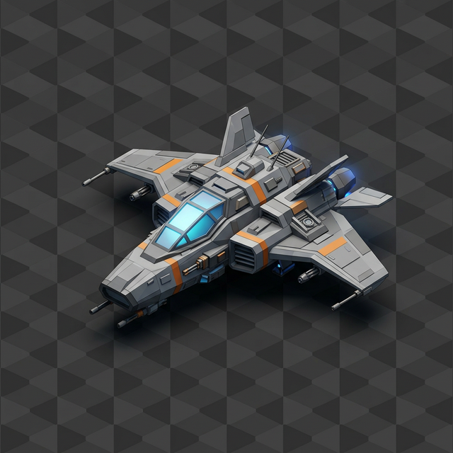

Open source / MIT licensed / Local
ViperMesh
for Blender
Give your agent
the tools to work in 3D.
Connect an MCP-compatible agent to Blender. Inspect your scene, make structured edits and check the result through one persistent session.
An agent connection for your existing workspace
Structured operations
Assembly, transforms, materials, cameras, lighting, rendering, UVs, retopology, rigging and export. Discover relevant tools as the task develops.
Inspect, then improve
Check support, orientation and clearances. Review visual results and repair specific problems. Diagnostic checks support judgment; they cannot certify every scene.
Room for custom work
Keep Python execution for unusual geometry and uncovered operations. Batch known actions and keep decision points where new observations matter.
One session. One local connection.
The client launches the Node server once. The server keeps a serialized connection to the addon. No ViperMesh cloud account or Docker is needed for the local connector.
From download to first edit
Connect your agent.
Use the Blender version currently tested in the repository and a Node runtime that meets the package requirements. Keep Blender open with the local bridge running.
Client-specific setup and troubleshooting ↗Install the addon
Download the versioned addon
.pyor.zipfrom the latest release. In Blender, install it from disk, enable it, and start the local bridge in the ViperMesh sidebar.Build the MCP server
git clone https://github.com/Ker102/vipermesh-blender.git cd vipermesh-blender npm install npm run buildAdd it to your MCP client
Configure the client to launch
nodewith the absolute path todist/public-portable-blender-mcp.js. Start one server per session, not one per tool call.{ "mcpServers": { "vipermesh-blender": { "command": "node", "args": ["/absolute/path/to/vipermesh-blender/dist/public-portable-blender-mcp.js"] } } }JSON configuration above is a common pattern; your client's syntax may differ.
Inspect before editing
Ask your agent to call
bootstrap_vipermesh_session, inspect the existing scene, then discover tools for your task. The repository includes a portable agent skill with adaptable operating guidance.
What to expect
Is it a 3D generation model?
The connector lets an agent operate Blender. It does not bundle a hosted text-to-3D model or promise production-ready assets. You can use local assets and your own Blender workflows.
Is it faster than UI automation?
Structured tools are designed to avoid repetitive navigation and generated Blender code. Performance depends on the model and task; we are preparing reproducible comparisons and make no universal speed or cost claim here.
Does it judge the final scene automatically?
Tools provide diagnostics and image-file checks. The agent still needs to inspect visual output and judge it against your request. A passing report can miss mesh-level collisions or an artistic mismatch.
What can an agent access?
This is a trusted local connector. Python fallback can execute arbitrary code inside Blender. Keep the bridge on loopback, connect trusted clients and review destructive actions. Read the repository security guidance before use.
How does this relate to ViperMesh Studio?
The public connector is usable independently. ViperMesh Studio is a broader AI workspace in development for artists and game creators, connecting generation, inspection and specialist workflows.
Join the Studio waitlist ↗Start with your scene.
Try one useful edit. Inspect the result. Tell us where the connection helps and where it falls short.
Share feedback ↗